North Peak: an irregular horn, two honest cirques, and a source that needs fixing
This checkpoint answers your preliminary decisions D1–D10 with measurements on the committed R1 terrain. Several v0 claims did not survive those measurements and are corrected here. The concept that remains is smaller, and more believable as nature: a three-arm horn on the authored crests, Nordbotn as the primary cirque, and Västra tarnbotn as a hydrologically motivated corrie bench.
feature/geo-r02c-a1d-landform-design, based on P0 90d0cb745e8e51a3dc737bd4dc11d6f8c322758b. Files: README.md (dossier) · image-inventory.md · concept v1 JSON · v0 as reviewed.
Labels: measured computed from R1/A-R1 · design target hand-specified intent · inferred. Sections are at true scale unless a vertical factor is stated.
- Corrections to v0
- Concept v1 maps
- D1–D10 decision sheet
- Northern source conflict
- Approach silhouettes
- Feature catalogue
- Five cross-section studies
- Coast, C1 and window v2
- Protected features
- P0 clay evidence
- Prerequisites before A1
- Assumptions and uncertainties
1What measurement changed since v0
| v0 said | Measured on R1 measured | v1 does |
|---|---|---|
| C1 sits on a 700–760 m plateau | v0's T1 ran parallel to the contours. The ground is a uniform ~33° east-facing slope between the n-crown and SE arms. | C1 re-oriented E/ENE under the n-crown arête |
| C1 lip ≥ 300 m from the coast | The lip was 213–285 m out, inside the taper. | Lip 400 m, whole cirque ≥ 366 m out |
| C2 has a 40–110 m north headwall | The crest north of v0 C2 is 591–614 m, below the 617–624 m floor. 37% of the floor drains to the sea. | C2 moved under the A2 junction, headwall W/NW |
| C3 via a +44–50 m divide raise | The floor centre was 21.5 m from the fixed crest, and 45% of the floor drains to the sea. | C3 not recommended |
| B1 ≥ 75 m from the route | Its upper end was 35 m from the centreline, inside the frozen corridor. | B1 shortened and offset to ≥ 114 m (conditional) |
| S1 on the trail | It was about 100 m off the trail. | S1 = the route's real traverse shoulder (protected) |
| A cirque staircase seen from High Tarn | C2 is 0% visible from K1 and the tarn overlook. C1 is 10–16%. | Claim withdrawn |
| Profiles | Vertical scale was compressed ×0.3–0.5. | Redrawn at true scale |
2Concept v1 on the map
Line style encodes status: solid = proposed, dashed = conditional, dotted = option, grey = deferred or not recommended. Each image includes its own legend.
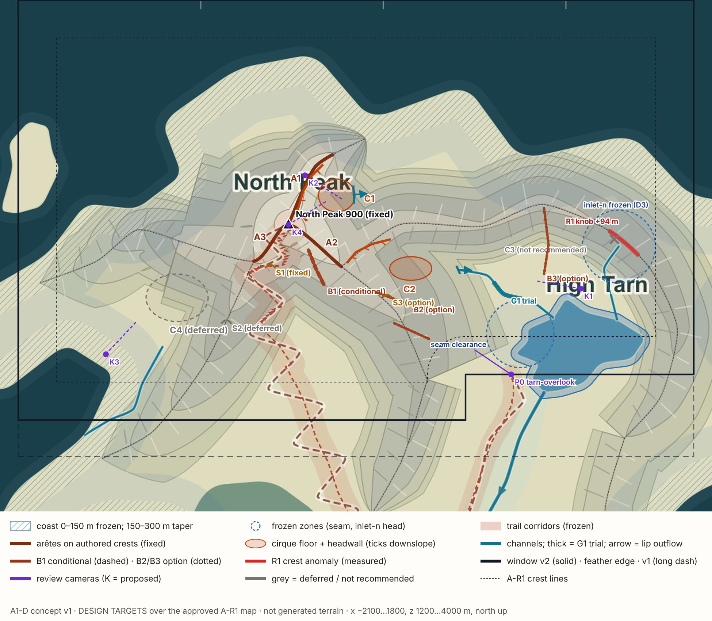


3D1–D10 decision sheet
| # | Your preliminary decision | v1 answer | Asks you |
|---|---|---|---|
| D1 | Three arms, irregular and believable | The arms are the authored crests, held within 1.2 m of their authored levels, so there is no headroom to cut notches. Irregularity comes from different cross-sections per arm (A1 sharp, A2 asymmetric, A3 broad), flank asymmetry, uneven rib and gully rhythm, and two cirques of different aspect and size. | Approve the per-arm character. Optional raised towers (≤ 15 m): yes or no? |
| D2 | C1, C2 first; investigate C3; defer C4 | C1 primary, C2 secondary, C3 not recommended, C4 deferred. C4 is the only cirque strongly visible from a main approach (Birchwood 30%, windward coast 89%). | Is that compelling enough for an A1b follow-up? |
| D3 | No automatic raise; analyse first | Analysed in §4. Do not raise. Freeze the inlet-n head in A1; correct the source in a forward-only master errata. | Approve that route |
| D4 | Asymmetric rock; no global slope target | Global envelope removed; each landform has its own asymmetric section. The 4 m grid limit is stated as a fact, not a target. | Rock meshes after the A1 clay review? |
| D5 | B1 only if it suits the route | B1 branches from the A2 arête, ≥ 114 m from the route centreline (needs ≥ 100). 2 of 24 R1 flow seeds reach the corridor. | Judge in clay from the route |
| D6 | Keep the coastal freeze; check C1 | C1 v1 lies entirely beyond 366 m from the coast (taper weight 1.0). The n-crown sharpening fades out in the taper. | — |
| D7 | Window v2 provisional; validate it | Valid polygon, 820 ha. Spill 100 m and glen 86 m outside. All features in the core. Euclidean feather, rounded at the reflex corner. | — (polygon mask is a prerequisite) |
| D8 | One gully trial | G1, tarn-inlet-w mid reach only. Bed fixed, ±5 m bench, ~40° / ~30° walls. | Review G1 in clay before generalising |
| D9 | No new lakes | Every floor is graded to its lip; no sinks. | — |
| D10 | A-R1 and P0 renders as primary references | The A-R1 map is the base layer and the P0 clay captures are the evidence. External references are secondary. | — |
4Northern source conflict (D3): analysis and recommendation
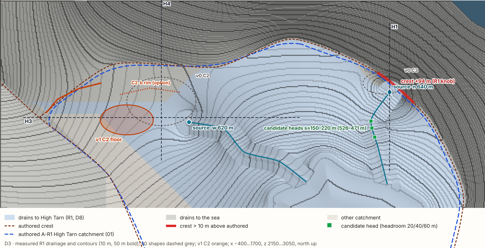

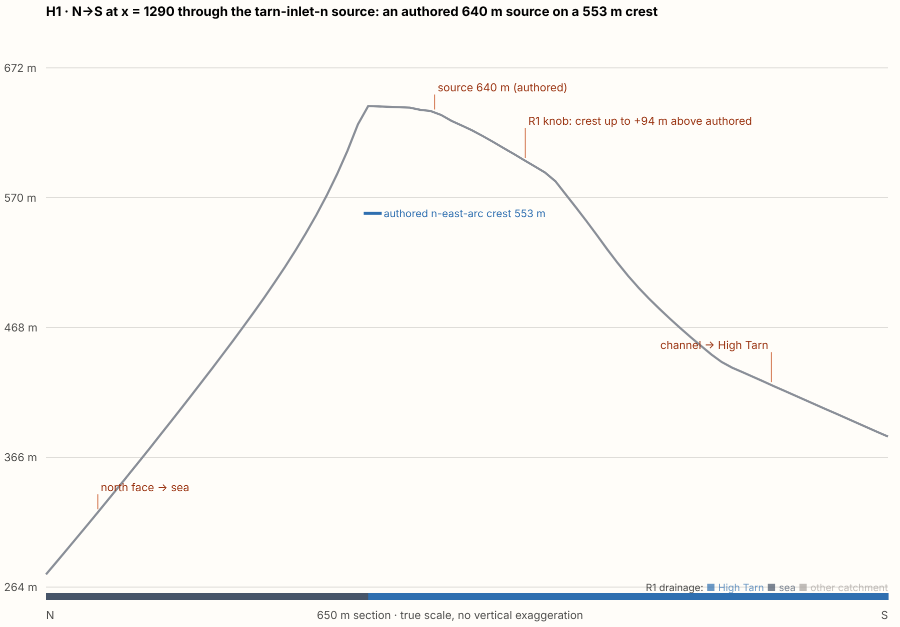
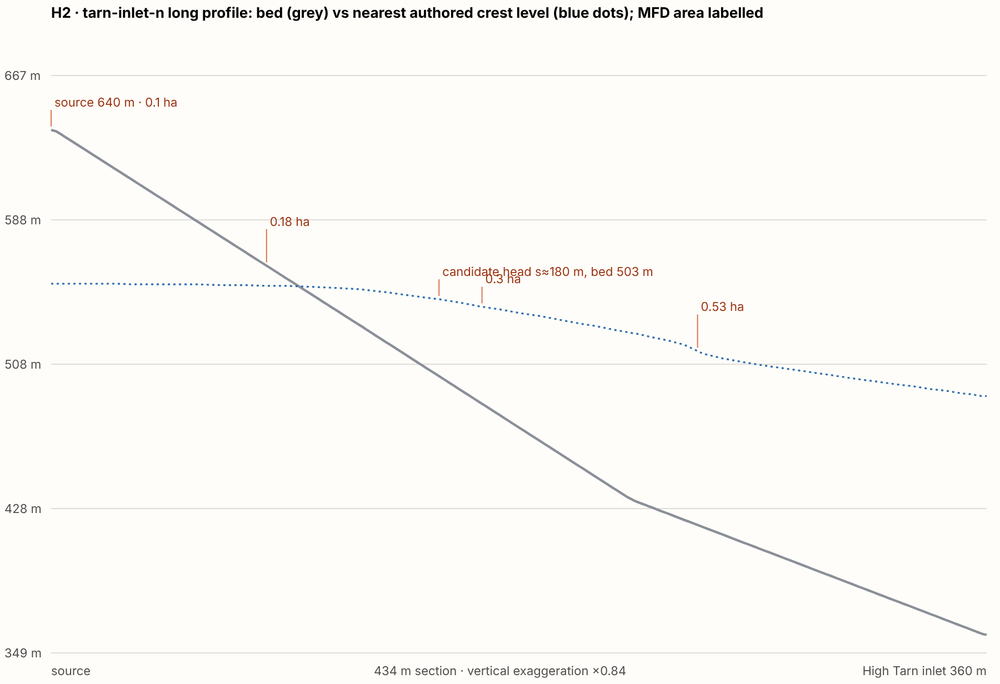
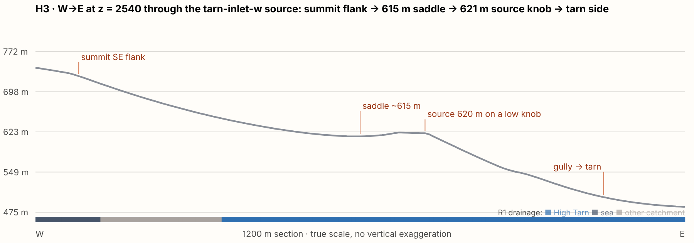
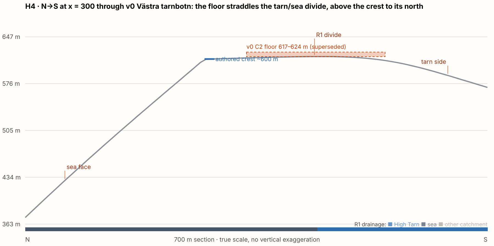
| Option | Outcome | Verdict |
|---|---|---|
| A · raise the divide +44–50 m (v0) | Codifies the knob into a ~690 m false top on a ridge authored at 553 m. Changes the skyline. The catchment stays ≲ 0.3 ha because the fixed crest is 37 m away. | not recommended |
| B · leave it, gully only | The knob and its "source on a summit" stay visible. | A1 interim only |
| C · forward-only design-master errata | Move the head down the existing channel line to a hollow below the crest. Downstream bed levels stay unchanged. The knob disappears in a regenerated R1.x. | recommended |
- In A1: freeze a 200 m zone around the inlet-n head, with no sculpting and no raise.
- Separate, approval-gated errata (alongside the R1.x seam fix): move
ht-source-nabout 150–180 m down the existing channel to about (1210, 2495–2525). There the authored bed is 503–526 m, which is 23–41 m below the nearest authored crest and 185–205 m from it. - In the same errata, review
ht-source-w(620 m) against the 597 m n-east-arc section. Root cause inferred: the master's source levels sit above nearby authored crests, and R1 follows the levels rather than the catchment polygon.
5Approach silhouettes (A1); the Cairn col belongs to A2
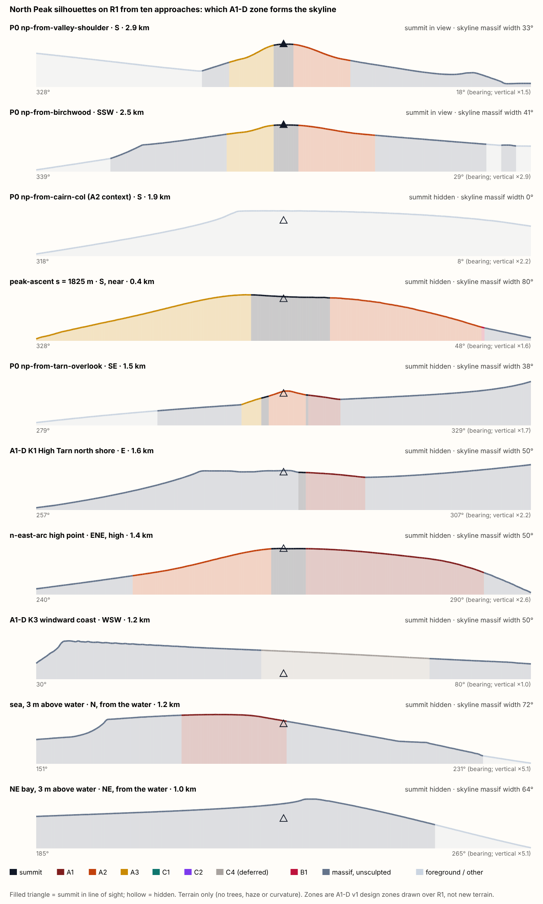

- South and south-west (valley shoulder, Birchwood): within ±12° of the summit, the skyline is 50–62% A2 + A3 + summit. The arête and summit shapes are the main identity levers, more than the cirques.
- The summit point is visible only from those two far approaches. From the other eight, the summit's own rounded brow hides the top, which is why D1's summit sharpening matters.
- Cirque zones visible: C1 81% from the n-east-arc, 10–16% from the tarn side, 9% from the sea. C2 96% from the ridge but 0% from the tarn. C4 30% from Birchwood and 89% from the windward coast.
- Cairn col: the summit is hidden and the foreground forms 100% of the skyline. A1 does not reshape for this view; it is A2's job.
6Feature catalogue (v1)
| Id | Form | Status | Target design | Constraint measured |
|---|---|---|---|---|
| Summit | North Peak (−520, 2770), 900 m | fixed | Sharpen the summit block so the top itself reads | Brow hides the top from 8 of 10 approaches |
| A1 | n-crown arête | proposed | Sharpest arm: concave east flank (C1 headwall), stepped west flank; fades out in the coastal taper | Crest within 0.8 m of authored |
| A2 | n-main SE arête | proposed | Steep NE flank, ribbed SW flank | Within 1.2 m |
| A3 | n-main W arête | proposed | Broad, lower-angle north flank; gullied south flank | Within 1.2 m |
| Towers | gendarmes on A1/A2 | option | ≤ 3, 8–15 m above the crest (raise only) | Needs approval |
| C1 | Nordbotn | proposed | E/ENE aspect; floor 690–705 m graded to a ~688 m lip; headwall 145–175 m; max lowering 85 m, no raise | Lip 400 m and floor 388 m from the coast |
| C2 | Västra tarnbotn (C2-a) | proposed | ESE corrie bench; floor 622–632 m graded to the 620 m source threshold; headwall 60–105 m; lowering ≤ 31 m, saddle fill ≤ 9 m | Floor 92% in the tarn catchment; headwall zone 90% inside authored 01 |
| C2-b | enclosed variant | option | North rim +15–25 m | Restores 1.03 ha, 100% inside authored 01 |
| C3 | Norra tarnbotn | not recommended | — | Sits on the fixed crest; needs the declined raise |
| C4 | Vindbotn | deferred | v0 study T4 kept | Most visible cirque from Birchwood (30%) |
| B1 | south pillar | conditional | Rib 15–40 m proud of the SW flank of A2 | ≥ 114 m from the route centreline |
| B2 / B3 | SE ribs / Tarnryggen rib | option | 10–30 m ribs | B2 judged from K1 and the valley shoulder only; B3 partly in the taper |
| S1 | route shoulder (−620, 2545) | fixed | Protect; the last rest before the final climb | Inside the frozen corridor |
| G1 | tarn-inlet-w gully trial | proposed | Bed fixed; ±5 m bench; ~40° outer / ~30° inner walls | R1 bench ±55 m |
| G2 / G3 | inlet-n / windward gully | deferred | — | D3 / D8 |
7Five cross-section studies
Grey is the measured R1 surface; dashed orange is the design target design target. Targets meet R1 exactly at fixed crests and at the edges of the edit. All panels are drawn at true scale. Control points
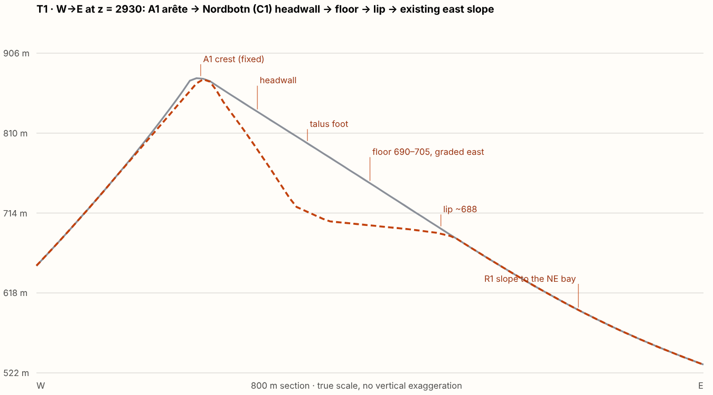

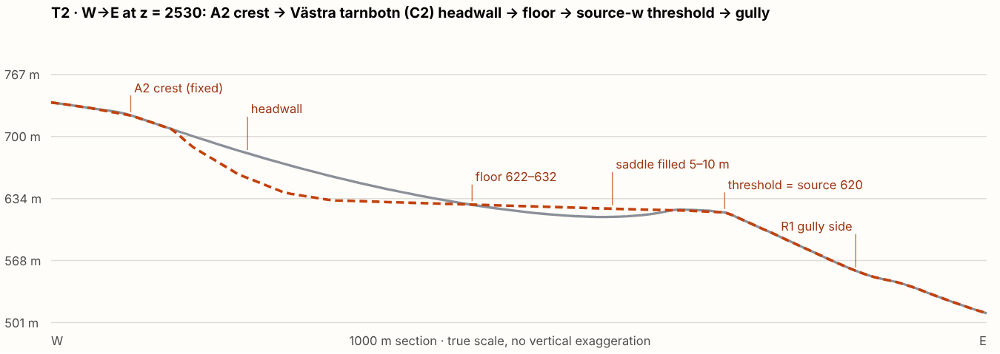

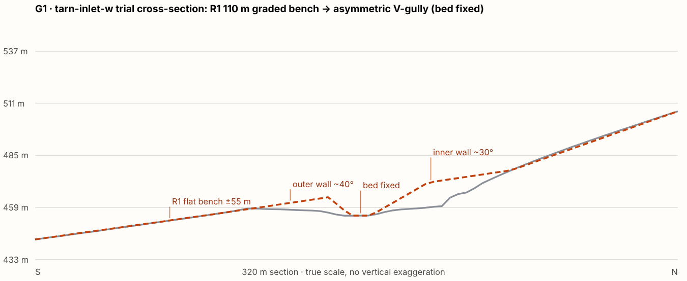

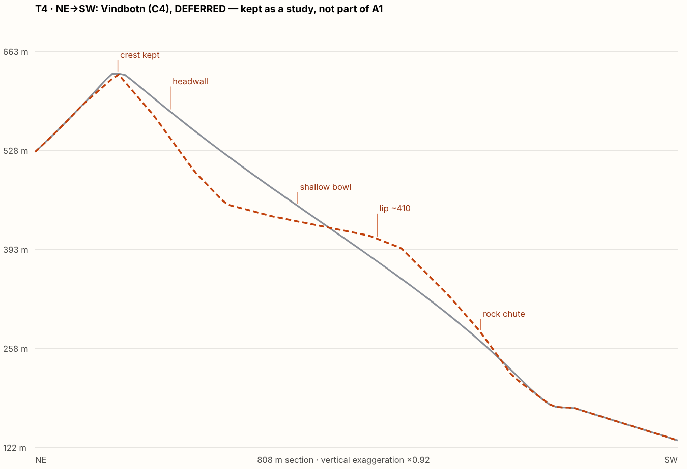

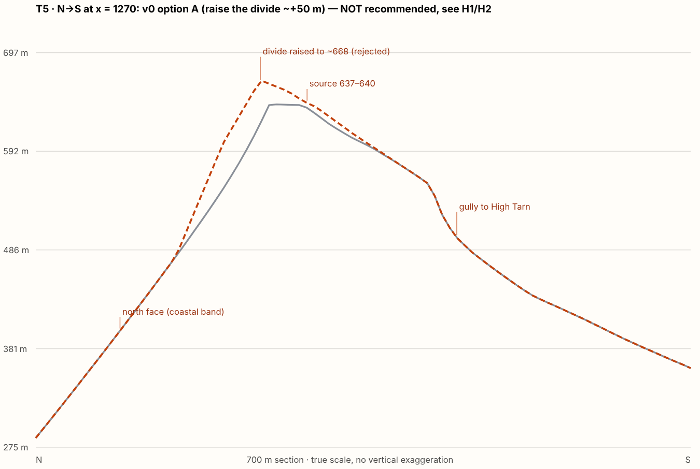

8Coast, C1 and window v2 (D6, D7)
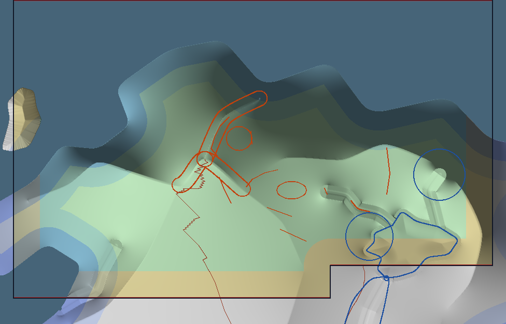
- Valid polygon, 820 ha.
- Spill 100 m and glen 86 m outside.
- High Tarn 88.5% inside, but frozen.
- 226 m of the peak-ascent route in the feather or ring (frozen corridor); the tarn-ascent route entirely outside.
- Every proposed and optional feature in the core.
- P0's mask loader reads boxes only, so a polygon mask is an A1 prerequisite.
- Frozen 0–150 m, linear taper 150–300 m.
- C1 v1: lip 400 m, floor 388 m, headwall 366 m from the coast. Taper weight 1.0, so fully compatible.
- The outflow continues down unedited R1 slope to the NE bay.
- The n-crown sharpening fades out in the taper.
9Protected geographic features
- R1 binaries and source, the A-R1 design master, P0 code and existing tests. A1 output is a new artifact, R1 + Δ.
- Summit (−520, 2770), 900 m.
- Every crest polyline: never lowered; raised only where approved.
- High Tarn level 360 m, wet extent and 32 m rim, plus the seam clearance (r 185 m).
- Spill and glen-tarn-outlet.
- All channel beds, levels and sources. Cross-sections change only on the G1 trial reach.
- The inlet-n head zone (r 200 m) pending D3.
- Coast plus the 0–150 m band, tapering to 300 m.
- Peak-ascent and tarn-ascent corridors, including S1. Cairn Saddle (A2).
- No new lakes or sinks. Catchment changes only as declared, and only toward authored catchment 01.
10P0 clay evidence (R1 as committed)


11Remaining prerequisites before A1 implementation
- Final art approval of D1–D10 as answered here, including C2-a vs C2-b, B1, towers and the C4 position.
- D3: approve freezing inlet-n in A1 and the errata route. The errata itself is not part of A1.
- Incremental solver H = R1 + Δ. An empty overlay must reproduce
terrain.f32byte for byte. - Declared constraint release (G1 reach; approved raises only). Null = nothing released.
- Crest lower bounds kept in Δ, with the active set reported.
- Converged windowed solve; cells outside the window byte-identical to R1.
- Polygon window mask (v2) with Euclidean feather, coastal taper and frozen zones.
- Overlay validator: clearances, graded floors with no sinks, and declared catchment changes checked against catchment 01.
- Hydrology and route gates: sink set empty; D8 outlets unchanged except as declared; channel beds within 1 mm; route tests unmodified.
- Cameras K1–K4 through a reviewed test change. P0 pins 15 cameras; adding is not a weakening.
- |Δ| = 0 inside the seam clearance, reported.
- Reference environment: Linux, two byte-identical runs. Mac probe recommended, not blocking.
12Assumptions and uncertainties
- Silhouettes and visibility are terrain-only (no trees, haze or curvature; 1.75 m eye). They rank options rather than predict final renders.
- Contributing areas are computed on R1 including its 1.6 m channel cuts, so they are approximate near channels. The whole-polygon catchment shortfall (51.7 ha) includes outlet-glen conventions; quote the inflow-side 13.4 ha instead.
- Design targets are control-point envelopes. A1's solver will smooth between them, so local slopes will differ.
- The relocated inlet-n head is a candidate range. Its catchment after regeneration is unknown until R1.x exists.
- Once carved, the cirques themselves will be more visible than the R1 slopes they replace inferred. The visibility numbers are a floor.
Stopped for final artistic review
This is a design checkpoint only. No overlay was implemented, no terrain generated, A1 not started, and nothing was merged or deployed. Please give final decisions on D1–D10 (especially D2 on C4, D3 on the errata route, and C2-a vs C2-b) before any terrain is generated.